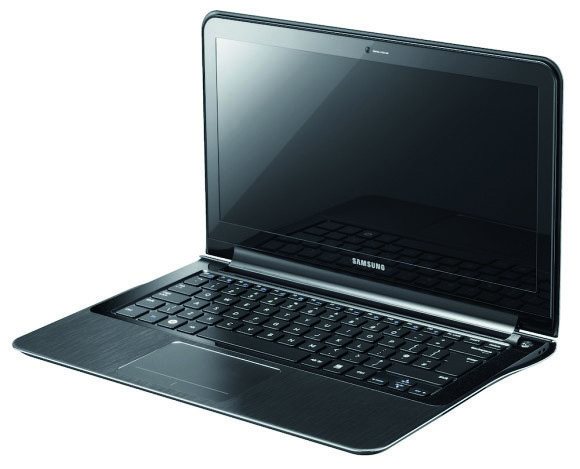
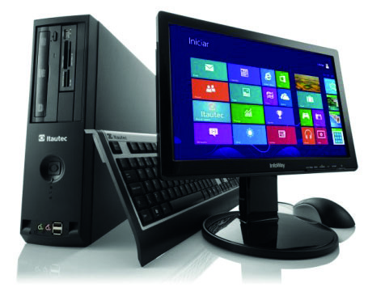
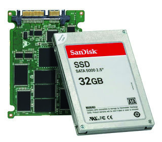
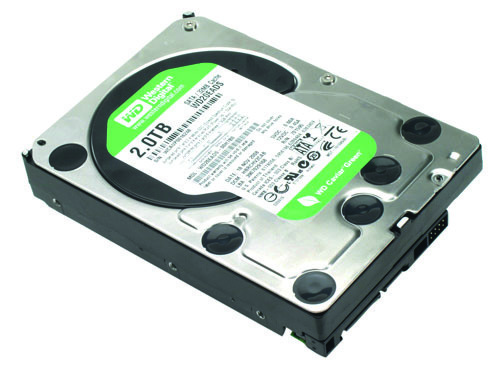
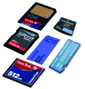
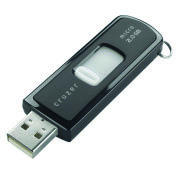
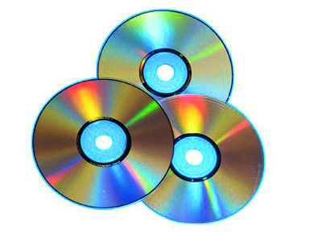
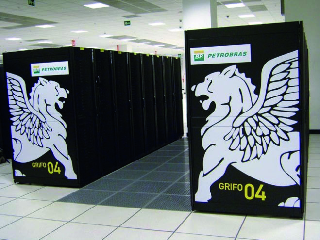
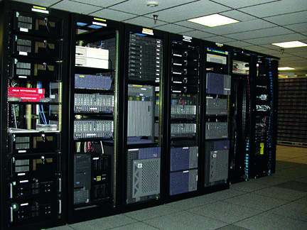

A busca em local envolvendo crimes por computador não difere muito de outras buscas, mas apresenta algumas particularidades relevantes. Algumas informações complementares são necessárias para a obtenção de dados em cenários mais complexos. Além disso, cuidados adicionais devem ser tomados para evitar a apreensão desnecessária de equipamentos, bem como o acondicionamento inadequado de materiais frágeis. Durante o cumprimento de mandado judicial, a função do Perito Criminal é a de especialista para assuntos relativos à sua área de atuação. O Perito Criminal, portanto, orientará a equipe quanto à seleção, à preservação e ao encaminhamento dos vestígios de informática. Basicamente, pode-se dividir o trabalho em um local envolvendo crimes por computador nas seguintes etapas: planejamento, execução da busca, seleção de material relevante e arrecadação.
O Perito Criminal da área de informática, sempre que possível, deve participar do planejamento das operações policiais envolvendo crimes por computador. Com esse intuito, o Perito Criminal deverá interagir com a equipe de investigação e, visando tornar a busca mais eficaz, orientará a montagem das equipes de busca, a escolha dos métodos de entrada no local, a determinação do tipo de equipamento a ser arrecadado e qualquer outra decisão relacionada às buscas. Diferentes ambientes requerem diferentes estratégias para a obtenção de evidências. Residências, empresas de pequeno porte, empresas de grande porte, empresas com filiais interligadas por rede são alguns dos cenários comuns. Portanto, a participação do Perito Criminal no planejamento permite a escolha das ferramentas adequadas para cada caso, identifica riscos e reduz a chance de imprevistos técnicos. Pela eventual ausência de outros elementos que possam servir como prova, atenção especial deve ser tomada nos casos que envolvam crimes próprios (condutas criminosas realizadas por meio do computador e consumadas dentro do espaço cibernético). A apreensão incorreta de computadores que estejam criptografados, por exemplo, pode dificultar (ou mesmo inviabilizar) o posterior exame pericial.
Com a finalidade de padronizar a conduta no trato com os vestígios de informática, a Instrução Técnica 003/2010-GAB/Ditec apresenta os procedimentos a serem adotados pelo Perito Criminal no local de busca. Já a IT 018/2013-Ditec/ DPF normatiza os procedimentos de busca e apreensão para casos que envolvam crimes de abuso sexual contra crianças e adolescentes. Ambos os normativos passam por processo de revisão e atualização. Como já mencionado, a execução da busca não é muito diferente do cumprimento de qualquer mandado. Após ter o local sob controle, deve-se evitar qualquer tentativa de ocultar, adulterar ou destruir evidências. Para isso, deve-se impedir que pessoas estranhas à equipe de busca manipulem os equipamentos de informática presentes no local. Disquetes, CDs, DVDs, pen drives e mídias de armazenamento de tamanho reduzido são fáceis de serem ocultados. Alguns materiais podem ser danificados em questão de segundos. Em seguida, o Perito Criminal realizará um reconhecimento a fim de localizar equipamentos, identificar sistemas e topologias de rede, localizar pontos de acesso e, caso necessário, tomará outras providências cabíveis para a preservação dos dados, como interromper conexões de rede eventualmente existentes (vestígios podem ser apagados remotamente por acesso externo à rede de dados do local da busca). O Perito Criminal não deve operar os computadores no local, exceto nos seguintes casos:
Caberá ao Perito Criminal determinar se existem condições técnicas e recursos humanos e materiais suficientes para que o equipamento seja operado no local. Caso seja constatada a ocorrência de crime por computador em andamento, o Perito Criminal deverá realizar os procedimentos de exame em local de crime de informática, previstos nas Instruções Técnicas supracitadas.
Ao contrário do que muitos pensam, uma operação bem-sucedida não é aquela que apreende o maior número de equipamentos existentes num local, mas sim aquela que tem foco e seleciona apenas o que é importante para o caso em questão. É fundamental usar as informações disponíveis a fim de se selecionar somente o que for relevante para a investigação. Há casos em que o mandado de busca abrange toda a empresa, apesar do interesse principal estar no setor de contabilidade, por exemplo. Nesses casos, não deve ser necessário apreender os computadores e mídias dos demais setores. Obviamente, deve-se estar atento aos computadores que funcionem como servidores de arquivos ou de e-mails, que podem concentrar as informações de interesse, e àqueles da diretoria ou da presidência. São sugeridas algumas dicas no momento da seleção do material a ser apreendido:
Uma busca em local envolvendo crimes por computador normalmente apreende computadores e mídias avulsas. Pode ser necessária a realização de cópia de dados no local.
As informações de interesse estão geralmente armazenadas na memória permanente desses equipamentos, ou seja, no disco rígido (HD ou SSD). Entretanto, eles não devem ser retirados do gabinete ou do notebook para serem apreendidos: a regra é apreender os computadores por inteiro. O principal motivo é a possibilidade de haver criptografia de disco ativada, vinculada a um módulo de segurança existente na placa-mãe (TPM), que faz com que os dados contidos nos discos avulsos se tornem inacessíveis. Devem ser consideradas também as dificuldades de acesso físico ao interior de notebooks, além da possibilidade de existência de configurações lógicas de conexão entre múltiplos discos (ex: RAID) que possam complicar a leitura desses discos sem o restante do hardware do computador. Dispositivos de entrada e saída de dados – impressoras, teclados, monitores e outros periféricos – devem ser apreendidos somente se houver algum interesse específico (ex: determinar se um documento foi impresso na impressora). Se o equipamento a ser apreendido estiver desligado, ele deve permanecer dessa maneira. Caso o computador esteja ligado, deve-se:
Se possível, devem-se apreender também os cabos de conexão, carregadores e demais acessórios correlatos, especialmente quando se tratar de modelos pouco usuais.


Computador e seus periféricos Notebook
Figura 6 – Exemplos de computadores


Disco rígido (HD) Disco de estado sólido (SSD)
Figura 7 – Exemplos de discos encontrados no interior de computadores
Mídias removíveis ou avulsas (pen drives, CDs, DVDs, cartões de memória, chips de celular, disquetes) também podem conter dados relevantes e devem ser apreendidas. Cuidado especial deve ser dado aos dispositivos conectados em um computador alvo, como gavetas de discos rígidos (HDs externos) e chaves de hardware (dongles), por exemplo. Além disso, é preciso atenção para mídias de armazenamento pouco usuais, tais como máquinas fotográficas e filmadoras digitais, e pen drives em formatos incomuns (chaveiros, canivetes, bichos de pelúcia). Quando uma mídia pouco usual for apreendida, deve ser arrecadado também o dispositivo de leitura correspondente, sempre que possível. Deve ser evitada a apreensão de mídias que claramente não possuem dados relevantes ao processo apuratório, como CDs e DVDs originais contendo músicas ou instalação de programas, por exemplo. Mídias óticas Cartões de memória Pen drive



Figura 8 – Exemplos de mídias avulsas
Quando houver inviabilidade legal ou técnica à apreensão de equipamentos, poderão ser efetuadas cópias dos dados existentes no local, os quais serão posteriormente examinados. A apreensão de dados pode ser realizada ainda para reduzir o volume de material arrecadado. Esse tipo de apreensão costuma ocorrer quando os dados estão armazenados em computadores de grande porte ou em algum repositório na rede da empresa. Em algumas ocasiões, pode-se, por exemplo, executar a cópia da caixa postal de e-mails de um alvo específico, evitando a apreensão de todo o servidor de mensagens da empresa. A realização dessas cópias deve ser feita, sempre que possível, sob a supervisão de um Perito Criminal da área de informática, que possui as ferramentas e conhecimentos necessários para a realização desse procedimento. Além disso, a apreensão de dados só deve ser realizada quando houver:
Esse procedimento deve ser acompanhado, sempre que possível, por testemunhas do próprio local – de preferência, o dono do equipamento, no caso de residências, ou os funcionários responsáveis, no caso de empresas. Os dados a serem apreendidos devem ser submetidos a funções unidirecionais de resumo, visando futuras verificações de integridade. Idealmente, o hash dos dados apreendidos deve constar no Auto de Apreensão.

Supercomputador

Conjunto de servidores
Figura 9 – Exemplos de computadores de grande porte
Mídias de armazenamento de dados são equipamentos muito frágeis, tanto em termos mecânicos quanto eletrônicos e magnéticos. Por isso, devem ser manuseadas com extremo cuidado. Cada vestígio requer um tipo especial de tratamento para evitar danos. Devem ser tomados alguns cuidados especiais com os seguintes fatores:
Não se devem deixar os itens apreendidos próximos a fontes de umidade ou em locais com alta temperatura, ou sol incidente;
Discos rígidos, por exemplo, devem ser acondicionados em embalagens próprias (facilmente encontradas a preços baixos nas papelarias e lojas de informática). Caso tais embalagens não estejam disponíveis, deve-se fazer algum tipo de proteção improvisada, tal como papelão ou plástico-bolha. Os equipamentos arrecadados necessitam ser ainda adequadamente etiquetados e lacrados. Sempre que possível, devem ser separados em embalagens diferentes, dando preferência ao uso de plásticos transparentes como elementos de embalagem. As etiquetas identificadoras devem, preferencialmente, ser afixadas sobre o equipamento em si, não sobre as embalagens. Os cabos de dados, carregadores e demais acessórios devem ser embalados juntamente com o equipamento correspondente. Os discos rígidos removidos de um mesmo gabinete devem ser embalados e lacrados em um único volume. Mídias removíveis devem ser agrupadas por tipo e cada conjunto deve ser embalado e lacrado separadamente.